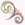
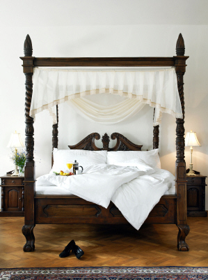

Need Romantic Advice for New Parents?
The 2 Secrets to Feeding Passion On a Diet of No Sleep!
Searching for some romantic advice for new parents? Well, peel away the crust on your sleep-deprived eyes. You've found what you're looking for.
I too have walked the path of the zombie parent, trying to "make it happen" and drum up some romance with my equally-exhausted spouse.
After 6 weeks
of a doctor-induced "no fly zone" across the bed, it can be a challenge to kick-start the intimacy that you enjoyed before your bundle of
joy arrived.
You've finally drunk enough coffee to stay up that extra hour and let out the stitching on your lingerie to accommodate your
new (hopefully temporary) "mom" body. You're ready for business.
You both remember (after some giggling) how to kiss (I'm talking KISS, not
the peck-on-the-lips hello kind of the kiss, but the kind of kiss that gave you your infant in the first place), and the mood starts to
shift towards the amorous when...did you hear that?
Oh yeah...you're a parent now.
That mini-person in the other room is hitting decibels you thought only animals could hear.
And you see your evening of passion collapsing into a burning pile of disgruntled defeat. Maybe tomorrow? Maybe next week? Maybe when she hits 18 and
moves out?
Be encouraged! This "new parent" season is only temporary. Even better, you don't have to let the fires of love smolder into smoke. You can keep
the flames alive even in the midst of this adjustment.
Here are the 2 secrets (yes, only 2 are needed) that turn happily married no-kid couples into happily married, 50th anniversary 6-kid couples.
These "secrets" are timeless, proven, and (even better) easy enough for exhausted spouses to actually do.
Romantic Advice for New Parents Secret #1: It's All About Trees and Stones
(well...not literally...)
"Love is a temporary madness. It erupts like an earthquake and then subsides.
And when it subsides you have to make a decision.
You have to work out whether your roots have become so entwined together that it is inconceivable that you should ever part.
Because this is what love is.
Love is not breathlessness, it is not excitement, it is not the promulgation of promises of eternal passion.
That is just being "in love" which any of us can convince ourselves we are.
Love itself is what is left over when being "in love" has burned away, and this is both an art and a fortunate accident.
Your mother and I had it, we had roots that grew towards each other underground,
and when all the pretty blossom had fallen from our branches we found that we
were one tree and not two."
~ Captain Corelli's Mandolin
I love that quote above. It does such a great job describing what love post-baby looks like. It's two bleary-eyed people, bad morning-breath
and all, caring for one another and thinking of each other during the difficult time of parental adjustment.
In fact, can I be so bold to say that any "romantic" advice for new parents that focuses merely on bubble baths and lingerie
is probably selling bubble bath and lingerie. Without a deeper emotional connection and understanding between spouses,
those marriage tips will quickly feel empty and bitter.
The old-people-holding-hands kind of marriage is based on humble service and a tender care for each other that develops
into an unbreakable bond of emotional intimacy.
Practical Love Advice for New Parents: Build a Fortress
A kind of intimacy that goes beyond thinking and serving your needs, but moves into the realm
of thinking and serving your spouse's. And when he does the same for you, an awe-inspiring love blooms up that can easily weather the arguments,
stresses, and agonies that occur in life.
Building a marriage that lasts through parenting requires the daily stacking of small stones and watching as that eventually creates a strong
impregnable tower that protects your marriage against infidelity, endless arguments, or just plain boredom.
Thoughtfully consider the needs of your spouse, and vice versa. Feeling rested? Offer to take the first night shift..(or even all
of them) for a night. Dinner not forthcoming? Volunteer to pick up supper on the way home from work.
Practice forgiveness daily. Did he wash the laundry with an ink pen, ruining your brand new shirt? Be thankful he's doing laundry at all,
and let it go. Does she seem to have forgotten about sex? Consider her struggles balancing new motherhood and be patient.
Use kind and polite speech with one another.Please and thank-you can work wonders. Never be more polite and
kind to strangers than you are to your own family.
And if your kids see you being polite...they'll become polite as well! My 2.5-year-old Elena
says "Excuse Me" constantly (it's adorable). She does this not because we're perfect parents (I wish), but because that's how we talk to one another at home.
Keep short accounts with each other. Don't let things stew. If there's something that needs to be worked through, bring it up
(with gentleness and humility) and vow (together) to work through it until it is resolved, no matter how long it takes. (Forgiveness and grace
are a MUST in this area!)
"Love is friendship set on fire."
~ Jeremy Taylor
In other words, how do you act/react and care for your best friend? That is how you should treat your marriage. Friendships last. Infatuations
and self-serving "What's in it for me" relationships fail.
Side Note:
I personally believe that the kind of forgiveness and help necessary for a strong marriage comes only through the Holy Spirit's work in my life, a
gift of God because of my acceptance of Christ's sacrifice. Feel free to read more about Cameron's and my search
for truth and knowledge.
I am not a tremendously gracious person. However, because of the Holy Spirit in me, I can give Christ's grace to Cameron. What a huge
difference this has made in our marriage! Both of us are stunned when we look back at how God has changed us both over the past 12 years. We can't
wait to see how the next 50 turn out!
Practical Love Advice for New Parents: Your Daily Do's
Here are some simple things you can do together every day to build your marriage fortress.
Give 5-minute kisses.
Do you know how long a five-minute kiss is? Long enough to forget how stressed you are and to remember how
thankful you are to be in this together.
Communicate with tenderness.
Lipstick love-notes on the mirror, lunchbox surprises, or a phone call for encouragement on a tough day. Look for ways to bless your spouse
with kindness and tenderness.
Hit the "Snooze" and cuddle.
Set your alarm clock ahead a few minutes to give you some cuddle-time in the warm bed
before rising. Those little unconscious touches will leave a smile on both of your faces the rest of the day.
Pray together.
It's amazing how much insight I get into my husband's thoughts when I hear him pray (and vice versa). Your
spirits joined together to worship and beseech God's grace is a powerfully uniting thing.
"The most powerful symptom of love is a tenderness which becomes at times almost insupportable."
~ Victor Hugo
Listen first, speak later.
Practice the discipline of listening. Decide to memorize the names of co-workers,
actually taking the time to enter-into each other's worlds. Share upcoming meetings, stressful days, exciting opportunities and then follow up
about them later.
Develop your friendship by listening (are you catching the keyword here?) and engaging in those parts of your life where you are separated. If you want him
to be involved in your life, and your kid's lives, make an effort to get into his life by listening, and only occasionally offering
comments. (If he feels like he's sharing his day with his mother, he won't want to share!)
Surprise, Surprise!
Add some excitement by throwing in the occasional surprise.
Hidden notes of love, scavenger hunts for little gifts, secret trips...all will keep your spouse on his toes.
(His favorite surprise? When you put the
baby to bed early, and wait for him to come home...in some sexy lingerie...lounging on the couch! There's nothing like a little appetizer before
dinner to keep the marriage passion healthy!)
Does your man love baseball? Get tickets! A love for the theatre? Book some seats! Even if it isn't your favorite thing to
do, your spouse will appreciate your desire to participate in his favorite things. Set up a friendly competition to see who can "out-surprise"
the other. These little things will make your relationship fresh and fun and avoid the stale tiredness of many post-children nuptials.
Romantic Advice for New Parents: Secret #2: The Dating Game
To fall in love is easy, even to remain in it is not difficult; our human loneliness is cause enough.
But it is a hard quest worth making to find a comrade through whose steady presence one becomes steadily the person one desires to be.
~ Anna Strong
Considering you spend more time with your spouse than anyone else (including sleep time), it is crucial that you become the comrade mentioned
in the quote above. Who wants to spend a significant amount of time with someone you find boring or (even worse) annoying?
Remember when you were dating? Remember the fun you had?
That fun will be crucial in the years of parenting ahead. Laughter lightens the load of difficult decisions and provides needed relief
during tough trials.
That's why it is absolutely imperative you learn to date your spouse. It is vital advice for new parents to keep the spark alive and
intimacy high. Your new baby is another person in the home, so you (and your spouse's) attention will be split.
As wonderful as children are,
there's a reason the divorce rate jumps up at the 25-year mark. Parents have an empty nest and don't know what to do with it! Dating post-marriage
will help keep your marriage off the chopping block on year 26.
By setting up a "date night" every 4-6 weeks or so, you are making time for the life-blood of your happy home: your marriage.
Side Note: Cameron and I
have declared the 2nd Saturday of every month as our "Date Night". We have it pre-written on the family calendar, ensuring that in the midst of
our crazy schedule, that time is protected.
In addition to "date nights", one night of the week Cameron and I have couch-time in the evening.
This is where we sit on the couch together, drinking coffee, tea, cocoa, or (in Cameron's case) a beer. We talk about the upcoming schedule, parenting
issues, money, or anything else. These weekly meetings ensure our monthly dates can be spent on having fun and not on finances!
Practical Love Advice for New Parents: Finding a Babysitter
If you're lucky enough to have family in your area, finding a babysitter may be the easiest thing you ever do as a parent. However, if you're like
me and don't live within mooching distance, choosing a trustworthy babysitter can be overwhelmingly scary. (A really old episode of The Simpsons
comes to mind...)
This is where the Internet comes in to save the day. Besides searching the national sexual offender database (http://www.familywatchdog.us), you
can search for traffic violations (DUI's?), or criminal records.
Since I'm pretty busy, I prefer that someone else do that for me. I also prefer to have someone else gather references for me. I also prefer to
have someone else gather parental opinions on my babysitter choices.
Luckily there are a few really good agencies that will do all that for me.

The Scoop on SitterCity.com
Allows you to post your babysitting job and have sitters contact you.
Use a "criteria" search to find a list of ideal candidates in your local area.
See the sitter's profiles, complete with photos, experience, and other skills (CPR always a bonus!)
Be able to view each sitters background checks, references, and see what other parent's thought of using that sitter.
Have yearly or monthly membership options, and a 7-day free trial. (Check here for coupon codes.)
Avoid looking for a sitter by posting your job and have sitters call you.
"Care-on-Call" helps you find a sitter immediately on those "nothing's going right" days.
Groups@Care lets you connect with families near you or nationwide.
See sitters "mom-reviews", references, and background check information online.
Lots of informational articles (including a blog) to give you all the information you need on choosing (and paying) a caregiver.
Special section to help parents with special needs children find a qualified nanny and/or babysitter.
Also provides qualified professionals to pet sit, clean your house, tutor your children, and care for your aging parents.
See the whole gambit of what they have to offer at
www.Care.com.
(Click here to see if they are running any current sales or specials.)
Besides being a big help finding qualified sitters in my local area, using a service is a real godsend when we're away from home and want
a sitter for some time away.
Practical Love Advice for New Parents: Hot Dates and No Money
{Photo by hawk684}
Don't assume you have to spend a lot of money to have a date. We've been known to bring our favorite boardgame to the local coffeehouse.
In fact, in the early months/years of parenting you could even stay home for your date night. (Post-bedtime is my favorite
time of day. )
The "where" is not as important as the "when". Plan ahead,
make his favorite dish (yes, that may mean Cheetos, covered nachos, and a cheeseburger), and cuddle on the couch with
a fun movie.
No matter what you do, there are two things each date should accomplish. You want to: A) make a memory, and B) have
plenty of laughs. If it does those two things, it's been a successful date.
You don't have to spend money for those things to happen. What about a game-night with other couples? Or is there a trail you can hike?
Get creative about finding fun ways to spend time together. Go bowling, putt-putt golfing, ice-skating, or just out for a nice dinner.
The point is to get away and spend meaningful time together. Do things that build memories. Each happy memory is another
cord tying you together. (And keep you tied together when the inevitable bad memories come...)
When the evening is over (and hopefully the sitter has put the kids to bed), transition to sweet physical intimacy by bathing together or sharing
massages. The morning cuddle-time will be even more meaningful after an evening of making love!
Practical Love Advice for New Parents: The Yearly Get-Away

Another crucial piece of advice for new parents is the idea of a yearly retreat. Try to schedule a weekend away once a year to focus on
each other and concentrate on your marriage.
It doesn't have to be on your anniversary. We were married in July, but we always take our trip in October. Not only is it cheaper, but we find that we need the break
more in October, than we do in July! Just pick a weekend and stick with it.
Although you can stay at a hotel for your little rendezvous, I recommend kicking up the romance by staying at a qualified bed and breakfast or
certified inn.
When you factor in the cost having to purchase breakfast in the
morning, they are just as reasonable as a cold, unromantic hotel room. The breakfasts are gourmet, served on china and in a elegant
setting. Compare that to iHop or Denny's!
I have stayed at dozens and dozens of bed and breakfasts over the years, and there truly is no comparison. If you've never given them a try, you
are missing out!
The largest directory for romantic bed and breakfasts (worldwide) is at
BedandBreakfast.com.
They have pictures and links to individual websites that
will help you plan your weekend get-away down to the smallest detail.
Besides the fun and intimate activities, Cameron and I set time aside that weekend to look back over the past year and discuss how our marriage really
is.
It's always a sweet time of coming
together to talk about all the things in our lives we always want to talk about, but never seem to have the time.
"If I had a flower for every time I thought of you, I could walk in my garden forever."
~ Henry David Thoreau
Besides looking at the successes and failures of the previous year, we also talk about the future year coming up, setting personal, professional,
and family goals to shoot for.
I look forward to this time every year. Sometimes it looks like a big trip with read-aloud books for the car (we've read the entire
Harry Potter series this way), or sometimes it's a bed and breakfast 20 minutes from our home.
No matter where it is, this yearly retreat feeds our growing intimacy and provides great memories to cherish for years to come.
Many people forget, when searching for basic advice for new parents, that as parents, your relationship will require a little more work
than it has in the past. "Creeping separateness" can slowly grow into the cracks of a good marriage.
Do yourself a favor, and add these things now, when your children are still in the cradle. So that when they fly the
coop, your empty nest, will still be your love nest.
ADD TO YOUR SOCIAL BOOKMARKS:BlinkDel.icio.usDigg FurlGoogleSimpySpurlTechnoratiY! MyWeb
I just subscribed to the site, and I'm very happy I did. I have worked in the medical field for several years and love to have good resources for when things come up... ~ Crystal S.
What a great site and thanks for having it available! ~ Bernadette W.
I'm very excited to start receiving the newsletter. I've checked out your site a couple times and I loooovve how it's arranged, your language, and tips - it's great! ~ Emily N.
Heather, I can't express how happy I am I discovered your site! ~ Liza T.
Thank you Heather, for your wonderful newsletter. There is always something new! ~ Desiree T.
I'm a 1st time young mom, 23 and single, so I have found very very helpful...I can't seem to stop myself telling everyone I know about you, some thought you were my mom! ~ Vuyiswa N.
Your website is very helpful and I discovered a couple of great online stores. 'Cause I'm not a big reader, it is very nice that I can find the most important information through your
website. ~ Tonya G.
Thanks Heather! Your Milestone eBook is SO detailed and so correct. My son is doing all or most of the things and many are not mentioned in the usual books/sites. Great job and keep it up! ~ Anwesha C.
Thanks so much for creating such an AWESOME website. I really appreciate your sense of humor and real writing style. ~ Andrea Z.
My baby refused all bottles until you showed me the MAM bottle. Thank you so much for the recommendation. I wouldn't have known about them if not for your website. ~ Jennifer at Sweet Lilly ConfectionsThank you ladies! Talk about great motivation to keep writing...


 I just subscribed to the site, and I'm very happy I did. I have worked in the medical field for several years and love to have good resources for when things come up...
I just subscribed to the site, and I'm very happy I did. I have worked in the medical field for several years and love to have good resources for when things come up...